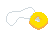
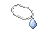

Strung amulet reference

Pendant of Lucien reference
Sullen Pendant candidate

Native PNGAll sprites use 48 × 32 canvases. Top: native size at 100% browser zoom. Bottom: matching 8× nearest-neighbour pixel zoom.


Native PNGBuilt-in imagegen prompt: simple thin white/grey cord with a pale-blue teardrop, authentic RSC shading and scale. Full prompt. Nearest-neighbour export and binary alpha. No in-game assets changed.